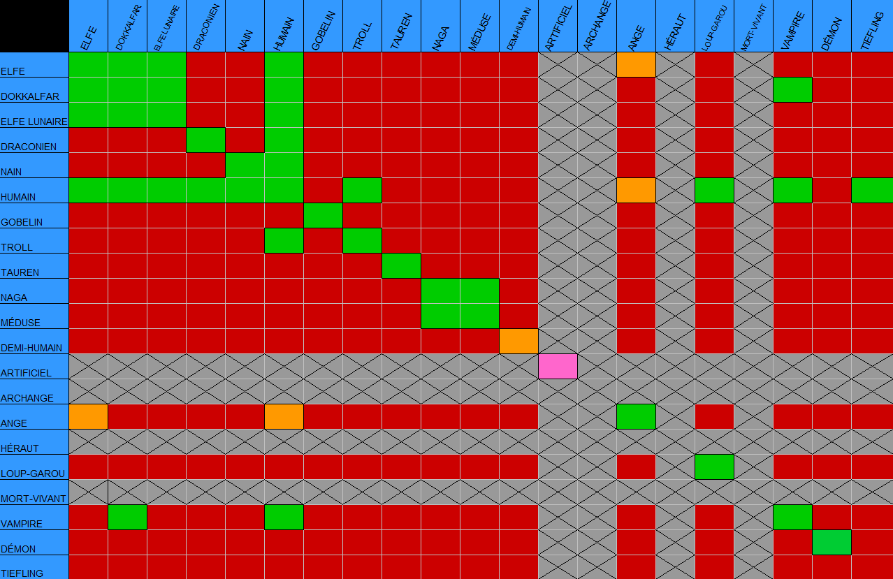

Hybridation
L’hybridation de deux races compatibles se produit lorsque deux parents de races et sexes opposés mettent au monde un enfant. Ce dernier, alors bloqué entre deux mondes verra ses facultés et sa physionomie altérée par le croisement de ses géniteurs. Ainsi, les facilités magiques ou les attributs physiques des deux races sont divisés par deux et s’additionnent pour donner les facultés de l’individu hybride naissant.
Prenons pour exemple concret un demi-elfe, dont le père est humain et la mère elfe (ou l’inverse). Comme attribut physique de la race de sa génitrice, nous retrouvons les oreilles pointues qui caractérisent les elfes. Cet attribut sera amoindri par les gènes de son paternel, ainsi ses oreilles seront moins grandes qu’à l’accoutumée. De plus, les facultés sensorielles telles que la vision accrue ou encore l'ouïe prodigieuse du peuple ancestral seront aussi réduites, bien que demeurant amplement supérieures à celles des humains.
En fonction du lieu de naissance de l’enfant hybride, de la vie commune de ses parents ou non et des peuples qu’il va côtoyer, ses croyances religieuses s’adapteront. De plus, il arrive que des hybridations puissent être rejetées par certaines races cherchant la conservation d’un sang pur et unique ou ayant des rancunes tenaces envers la seconde race constituant l’individu.
Ci-dessous, vous pourrez consulter les différentes variations / hybridations possibles au sein de l’Yndrill :
Légende :
Hybridation possible Hybridation impossible Reproduction impossible Cas particulier
Cas particuliers :
- Anges : Les anges ne peuvent se reproduirent qu'entre eux en vivant au Balcon de la Destinée.
- Ange / Humain - Elfe : Si un ange se rebelle, il tombe du Balcon, et devient alors mortel. Il peut alors s'hybrider avec un humain ou un elfe.
- Demi-humain : Ils ne peuvent se reproduire qu'entre demi-humains de même espèce.
- Artificiel : Les artificiels étant crées, ils ne sont pas capables de se reproduire, sauf les fées, devant passer par un processus de pollinisation des fleurs.